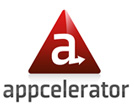
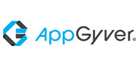
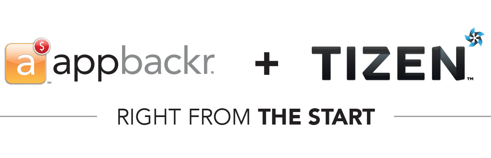
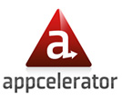
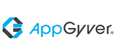

Our Cross-Platform Partners
12 cross platform tools use the appscore and the PRE score to qualify apps for incentives from operating systems and partner stores.



appbackr API is now integrated across major cross platform mobile developer tools. Learn more

appbackr worked with Tizen in 2013. We scored over 6000 apps with our appscore and PRE score and sent out over $1 million in cash incentives to qualifying developers.
Developers built native Tizen apps, ported HTML5 apps, or leveraged cross platform platforms and the appbackr API to upload their app to appbackr for scoring and evaluation.


Tizen™ will help HTML5 developers monetize their apps.
Tizen™ is an open-source and standards-based software, based on HTML5. It’s backed by hardware makers that are building devices running the Tizen OS™. These devices need apps.
Tizen™ is a trademark of the Linux Foundation
An app's PRE Score is it Pre Release Evaluation Score. The PRE score is a binary evaluation that analyzes apps before they are released. Both scores drive discovery, distribution and incentives for developers' apps.
Learn what goes into the evaluation of your apps — and what it takes to get a great score.